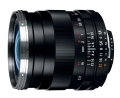

器材库 > 35mm画幅MF定焦镜头 > Distagon T* 25/2.8 ZF.2

详细规格
镜头类型
广角镜头
发布日期
2010-08-23
厂家推荐价格
101,850.00 （日元）
焦距
25mm
最大光圈
f/2.8
最小光圈
f/22
视角（对角）
81
镜头结构
10片/8组
最近对焦距离
17cm
滤镜口径
58mm
镜头卡口
Nikon AF
防抖
否
颜色
黑色
尺寸
66×67mm
重量
460g
追逐阿波罗2015-01-23 13:464.58 分
操作性 5.00耐用性 4.50性价比 4.50解像力 4.50色彩还原 4.50机械结构 4.50
布衣秋叶2014-11-15 18:475 分
操作性 5.00耐用性 5.00性价比 5.00解像力 5.00色彩还原 5.00机械结构 5.00
人参大棒槌2014-09-05 21:185 分
操作性 5.00耐用性 5.00性价比 5.00解像力 5.00色彩还原 5.00机械结构 5.00
liuyiru2013-12-20 14:465 分
操作性 5.00耐用性 5.00性价比 5.00解像力 5.00色彩还原 5.00机械结构 5.00
一菩2013-12-07 01:075 分
操作性 5.00耐用性 5.00性价比 5.00解像力 5.00色彩还原 5.00机械结构 5.00
woxinfeiyangma2013-08-06 22:404.83 分
操作性 5.00耐用性 5.00性价比 4.00解像力 5.00色彩还原 5.00机械结构 5.00
zhangchihello2012-08-16 18:004.92 分
操作性 5.00耐用性 5.00性价比 4.50解像力 5.00色彩还原 5.00机械结构 5.00
woyaojieyan2011-12-20 20:364.58 分
操作性 5.00耐用性 5.00性价比 4.00解像力 4.50色彩还原 5.00机械结构 4.00
junm2011-08-09 17:024.42 分
操作性 4.50耐用性 4.50性价比 4.00解像力 4.50色彩还原 4.50机械结构 4.50
千里雪2011-07-09 19:084.75 分
操作性 4.50耐用性 5.00性价比 4.50解像力 4.50色彩还原 5.00机械结构 5.00
我爱RC2011-01-20 08:584.75 分
操作性 5.00耐用性 5.00性价比 4.50解像力 5.00色彩还原 5.00机械结构 4.00
RRM2010-11-22 16:394.92 分
操作性 5.00耐用性 5.00性价比 4.50解像力 5.00色彩还原 5.00机械结构 5.00
产品图 / 样片
Distagon T* 25/2.8 ZF.2